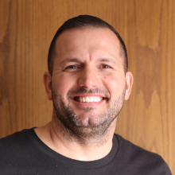

Us
-

Joseph Madigan
Creator of Pray Up
-
David Dyer
Director of Technology
-

Todd Dalton
Advisor
-
Keggy Baer
Advisor
Pray Up is a prayer movement about increasing our prayer life and witnessing the power prayer has to change a personal situation, a mental setting, or a physical environment. The campaign starts in cities, then moves to states, and will be available as an online platform to make a global impact. If you see the Pray Up logo, take it as a reminder; more than ever, we live in a time that prayer is needed. Local churches in Marion, Indiana, are coming together in “Pray Up Teams” because they see the effects of Pray Up’s vision and still believe in the power of prayer. Pray Up is currently enrolled in Elevate Ventures to raise capital for the development of the fully functional app.